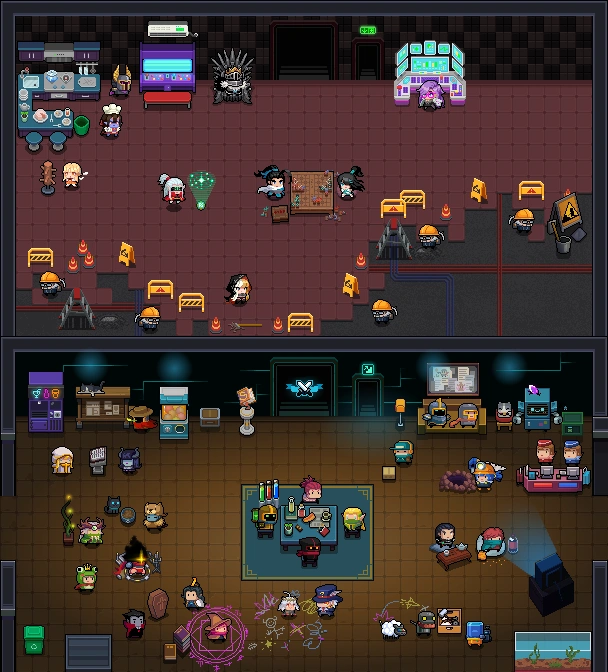
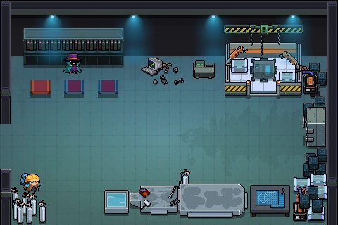
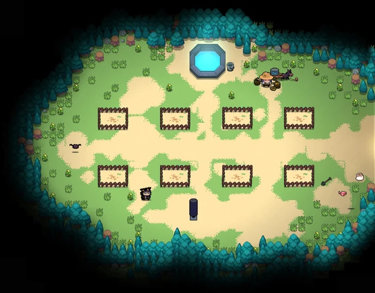
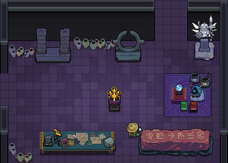

Used for selecting heroes, upgrading base statistics, and collecting daily rewards from the mailbox.

Here you can craft previously discovered weapons, assemble robotic suits, or use blueprints to unlock new equipment.

Allows you to plant seeds and harvest resources or passive bonuses for your next playthrough.

Provides access to special game modes, such as "The Origin" defensive mode or the endless "Matrix" mode.